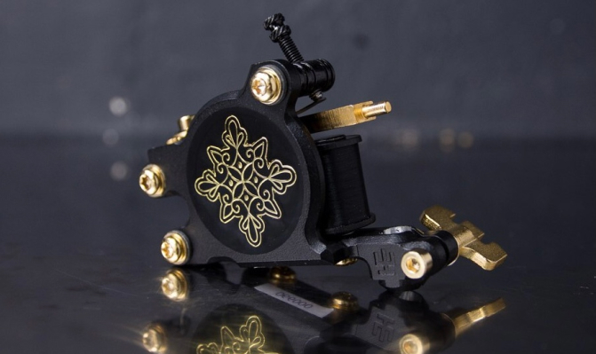

tribals and folks inspired tattoos
living in the present with respect for traditions
Daria Sharova
Tattoo artist
Based in Berlin, Germany
tribals and folks inspired tattoos
My name is Daria Sharova.
I'm a professional and ambitious tattoo artist and painter
I'm one of the few in the world working in the tribal tattoo style. I've been tattooing for 11
years, and during this
time, I've developed my own unique style and achieved high quality in my work. I’ve been
studying
the cultures and
traditions of various peoples and tribes and integrating this knowledge into my art. This
artistic
expression extends
beyond tattoos to painting, clothing, and jewellery
About me
Thanks to my diligence and determination, I have had the
opportunity to
work at the best tattoo studios in Saint
Petersburg, alongside top Russian tattoo artists. I have been featured in tattoo magazines, given
lectures and seminars,
and participated in exhibitions and collaborations
Through my art, I aim to draw people's attention to the cultural heritage of tattooing. I believe
it's
important to
preserve these traditions and to raise awareness about the diversity of peoples and tribes, their
customs, and rituals.
Currently, I am based in Berlin, embarking on a new chapter of my life

My style
I’m an explorer by nature.
That is why the traditions and tattoos of different tribes and nations resonate with me incredibly
It's a limitless layer to explore.
The more I learn, the more I understand how everything in the world is interconnected.
And through ornaments I can see that connection
authenticity
Through tattooing, I pay tribute to tradition. I tell your personal story and represent a commitment to roots, ideals and spiritual values"
naturalness
With ornaments , I emphasize the natural beauty of the body. I try to fit the image as anatomically as possible. I often use freehand for this purpose
minimalism
With time and experience I have come to the conclusion that the simpler the better. I do tattoos so that even from a distance of several meters they still emphasize your beauty and complete the image
My Works


Preparation for a session
- It is very important to get a good night's sleep before the
session.
A healthy 7-9 hour sleep will help you to bear the process more comfortable, and the body to recover faster - You should eat well before the session, it will help to avoid
dizziness in the process, as well as nourish your body
with the necessary energy.
I recommend bringing some snacks with you, especially sweets - Loose and comfortable clothing will help to make sure that you
aren’t randomly getting itchy, overheated and it will
allow you to easily re-adjust your positioning in case you become uncomfortable.
Make sure that your clothing allows easy access to the tattoo site and is fresh. You may bring a change of clothes/socks if necessary - You should moisturize your skin 1-2 times a day with a moisturizing cream for 7-10 days before the session. This will ensure easy application of the ink
- Drink a lot of water, it will make your skin hydrated and prepared for your tattoo session. Hydrated skin takes ink a lot better than dehydrated skin. And in general, drinking enough water is good for the body
- Think in advance about what will help you to not get bored at the session. It can be your favorite music, series or book. Don't forget to take your headphones
- It is forbidden to take alcohol and blood-thinning drugs (aspirin) at least one day before the session. They can cause profuse bleeding during work
Tattoo healing guide
-
Remove the compress made by the artist
Wash the tattoo thoroughly and gently with warm water and soap (use the simplest one without fragrances). Wipe the tattoo with a clean paper towel, let the skin breathe for 5-10 minutes
-
Use ointment to heal
With a clean finger, apply a small amount of a special ointment (Bepanthol, Bepanthol plus) in a thin (!) layer on the tattoo and spread over the entire surface
-
Wear a bandage
Tape a new absorbent pad (sold in pharmacies, DM, Rossmann), with plaster, it is recommended to use a compress size larger than the size of the tattoo, ~5−10 cm in each side to avoid slippage. Let the compress be slightly loose so that the body can move comfortably
You need to do this procedure three times per day. In the morning after waking up, in the middle of the day, and before going to bed
After 2-3 days of performing the procedure above, the compress can be abandoned
-
Care regularly
You need to continue to apply a special ointment on the tattoo for another 2 weeks. After that, you can switch to any moisturizer or lotion to use for another 2-4 weeks. Try to keep your tattoo moistened all the time
Collaboration
I’m always open for new collaborations, exhibitions and photo sessions . If you’re interested to co-create together contact me via email please
FAQ
-
How to book an appointment?
Fill out this form
-
How long does it take to get an answer after filling out the form?
The answer can take up to 1-3 weeks. It depends on my workload. Please do not duplicate your messages in direct and do not write repeatedly. This will not speed up response time, it will only increase it as I answer everyone on a first-come basis
-
How is the cost of a tattoo calculated?
I don’t charge a price per hour. The cost of a tattoo is calculated individually, depending on the size, placement, details and a composition. Fill out the form to find out the exact cost of your project. A design is a gift for your tattoo
-
What are the contraindications for a tattoo?
- - Severe viral diseases (HIV, AIDS, hepatitis)
- - Oncological and acute inflammatory diseases
- - Diseases of poor blood clotting (hemophilia, thrombocytopenia)
- - Diabetes mellitus type 1 and 2
- - Diseases that strongly suppress the immune system
- - Serious autoimmune diseases
- - Mental disorders and epilepsy
Permanent:- - SARS
- - Inflammatory and allergic skin diseases
- - Disturbances of arterial pressure, hypertension
- - Period of pregnancy, breastfeeding
- - Alcohol or drug intoxication
- - Physical damage to the area of the skin where the tattoo is planned
- - Strong tan in the area of the future tattoo
Temporary restrictions: -
Is it safe? Are the materials sterile?
Before the session, all work surfaces are treated with a disinfectant solution and then covered with a disposable barrier protection. All consumables are also disposable: needles, ink caps, cups, spatulas, razors, wipes, barrier protection for a tattoo machine and spray battle. The grip for the tattoo machine is disinfected and sterilized. The needles are opned on the session in front of you
-
Do I need a touch-up after the session?
Mostly, a touch-up is not required, but the final healing largely depends on the individual characteristics of the skin, the functioning of the immune system, and a treatment. After a complete healing (1-1.5 months), send me a photo of your tattoo by email in daylight, then I can tell if a touch-up is needed in your case. If it is needed, that's ok. It usually doesn't take long. Correction is free, only consumables are paid